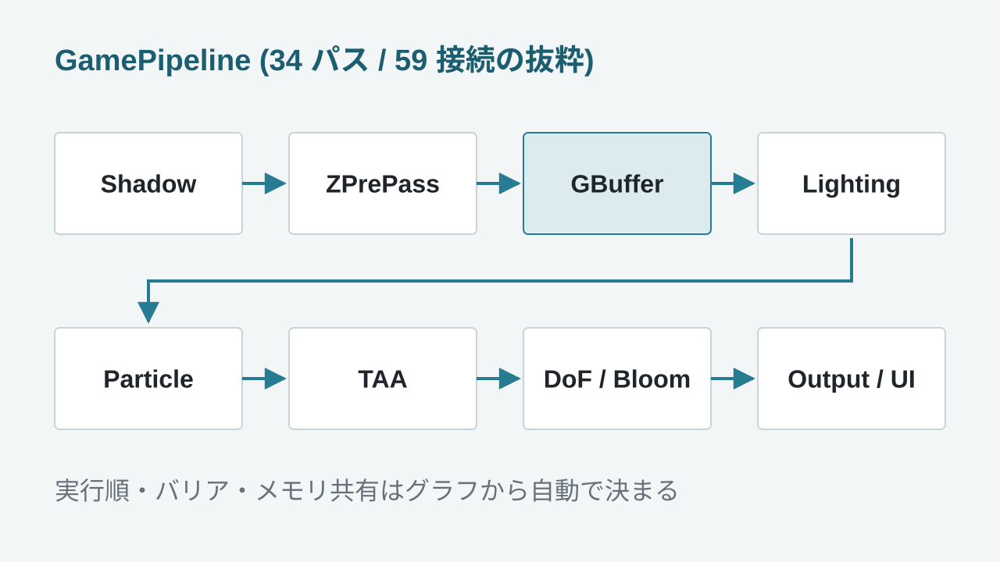

自作エンジン / 技術詳細
DirectX 12 の描画
レンダーグラフを土台に、メッシュシェーダーやレイトレーシングなど現行世代の GPU 機能をゲームの画面作りへ組み込みました。
01
概要
描画の全体像
描画の順番を C++ に固定せず、データとして持っています。パスの接続はノードエディターで編集でき、シーンごとに別のパイプラインを割り当てています。
シーンごとに描画を使い分ける
- 速さが大切な戦闘シーンは、シャドウマップを中心にしたパイプラインです。GI と反射は外しています。
- 見た目を見せる格納庫は、レイトレーシングの GI・反射とボリュメトリックフォグを使うパイプラインです。
02
動作動画
実際に動いている様子
03
仕組み
レンダーグラフ

- パスの入出力からトポロジカルソートで実行順を決めます。循環があるときはコンパイルを失敗させます。
- リソースの状態が変わるところにバリアを自動で入れます。
- 使う期間が重ならないリソースは1つのヒープで共有します(メモリエイリアシング)。
- 前フレームの結果を読む TAA のような構成も、循環にならない形で表せます。
04
実装
工夫したところ
メッシュシェーダーと GPU での LOD 選択
- すべてのメッシュをメッシュレットに分け、増幅シェーダーで視錐台カリングと裏面(法線コーン)カリングを行います。
- LOD は画面に占める割合から GPU で選ぶので、影のカスケードごとに違う段を選べます。
レイトレーシング
- GI と影は DispatchRays、反射とボリューム影、ボス撃破の光の筋は RayQuery と、用途で使い分けます。
- 時間方向の蓄積と空間フィルターでノイズを消します。GI は低解像度で計算してから拡大します。
- スキニング後の頂点で BLAS を更新し、静的な BLAS は複数フレームに分けて圧縮します。
- ボイドは光の筋が出ている間だけ、レイトレーシングの対象に登録します。
GPU パーティクルとポストエフェクト
- 発生・更新・描画リストの作成をコンピュートシェーダーで行い、
ExecuteIndirectで描画します。 - フリップブックとプリマルチプライドアルファで、煙や炎に立体感を出します。
- アセットをまたいで粒を集め、バイトニックソートで遠い順に並べます。
- PBR のディファード、カスケードシャドウ、ボリュメトリックフォグ、GTAO、TAA、ACES のトーンマップを実装しました。
VRAM を使う分だけ確保する
- リソースに用途の札を付けて VRAM を用途別に集計し、エディターで確認できるようにしてから削りました。
- 可変長のメガバッファ : 予約リソースで、必要な分だけ 4 MB 単位でヒープを割り当てます。空きが続いた領域は、GPU が使い終わったのをフェンスで確かめてから手放します。
- 頂点形式の分割 : 静的な頂点は八面体エンコードの法線・接線で 32 バイト、ボーンの割り当ては 16 バイトの別バッファにしました。
- BLAS の圧縮 : ビルド後に圧縮サイズを読み戻し、複数フレームに分けて差し替えます。
05
成果と計測
数字で見る
| 項目 | 値 |
|---|---|
| テストシーンの GPU メモリ | 3,858 MiB → 1,697 MiB |
| 描画パスの種類 | 43 種(テスト用を含む) |
| 戦闘シーンのパイプライン | 34 パス / 59 接続 |
動作確認環境 : Intel Core i7-14650HX(論理24スレッド)/ NVIDIA GeForce RTX 5060 Laptop GPU / メモリ 16 GB
06
主なコード
ソースの場所
Engine/Graphics/RenderingPipeline/RenderGraph/Engine/Graphics/Raytracing/Asset/Shader/Source/Geometry/MeshShader/Engine/Graphics/D3D12/VideoMemoryTracker/Engine/Graphics/D3D12/GPUBuffer/MegaBuffer/Engine/Graphics/FrameCompute/ParticleSimulation/
07
参考資料
参考にした資料
DirectX 12
- 書籍 : DirectX12の魔導書、HLSLの魔導書
- Web : もんしょの巣窟
- ベース部分の参考(一通り移した後に改造を重ねました)
- 解説シリーズ : DirectX12で1からフレームワーク制作、DirectX12でミクさんを躍らせてみよう
- AI : ChatGPT
レイトレーシング・メッシュシェーダー
- レイトレーシング : HLSLの魔導書
- メッシュシェーダー : ゆっくり寺子屋チャンネル
HLSL・レンダリング技術
- HLSLの魔導書 : ラジアルブラー、高瀬式ブルーム、レイトレーシング、物理ベースレンダリング、影、ライティング
- レンダリングの基礎 (1)
- レンダリングの基礎 (2)
- コンピュートシェーダーの基礎
- PBR と IBL
- 放射ブラー
08
ほかの技術を見る
自作エンジンの主な技術